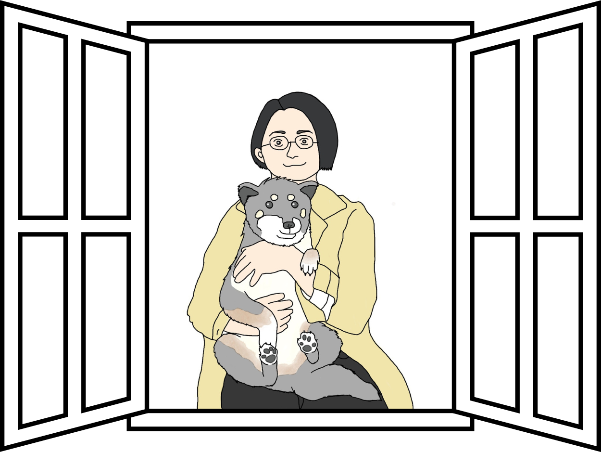
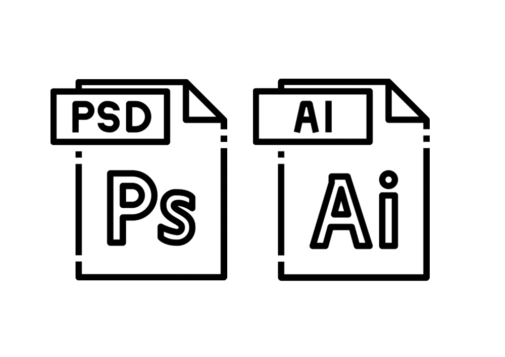

A
B
O
U
T
M
E

1989年生まれ。札幌市在住。写真撮影、絵を描くことが得意。25歳の時に5ヶ月程度ブライダルカメラマンとして勤務。Photoshopでの写真加工やアルバム制作を行なった経験が充実感のある経験として心に残る。 一瞬一瞬を逃さないような瞬発力よりも物事にじっくり取り組むことが得意だと気づき退社。健康上の問題で看護師を退職したことをきっかけにWEBデザインに興味を持つ。2024年9月より職業訓練校に通う。そこでホームページ制作の面白さに魅了される。
S
K
I
L
L
- Web development
- HTML/CSS ★★★☆☆職業訓練校にて学習済み。
- jQuery ★★☆☆☆職業訓練校にて学習済み。
- JavaScript ★★☆☆☆独学にて学習中。

- Web design 
- photoshop ★★★★☆5ヶ月実務経験あり。写真編集/アルバム制作
- Illustrator ★☆☆☆☆職業訓練校にて学習中。